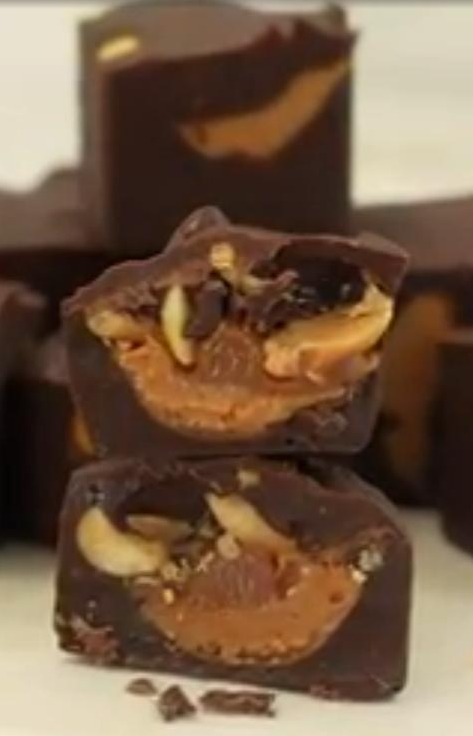

Snickers Bites

Description
Fantastic peanut butter snicker bites.
A perfect balance of sweet and salty.
Easily made at home with minimal effort.
Originally from: allrecipes.com (new tab)
Ingredients
- 1 (12 oz. bag) semi-sweet chocolate chips
- 1 tablespoon coconut oil
- 1 cup peanut butter
- 3/4 cup thick caramel sauce or dulce de leche
- 1/2 cup peanuts, roughly chopped
Steps
- Place chocolate chips in a a microwave safe bowl. Microwave in 30 second increments, stirring in between,
until chocolate is melted and smooth. Stir in coconut oil until melted and well incorporated.
- Spoon about 1 1/2 teaspoons chocolate each into 12 ice cube molds.
- Place peanut butter in a ziplock bag and pipe about 1 1/2 teaspoons over the chocolate. Top with the same amount of caramel and divide peanuts evenly over the tops of the caramel. Top each one with remaining melted chocolate.
- Place ice cube tray in freezer for 4 hours or overnight.
- Enjoy!